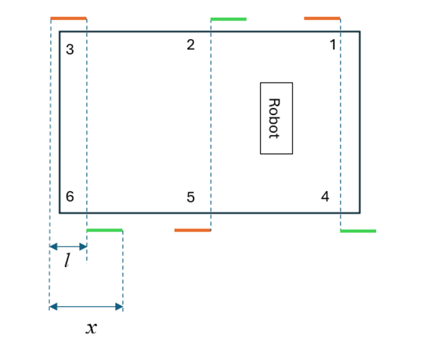
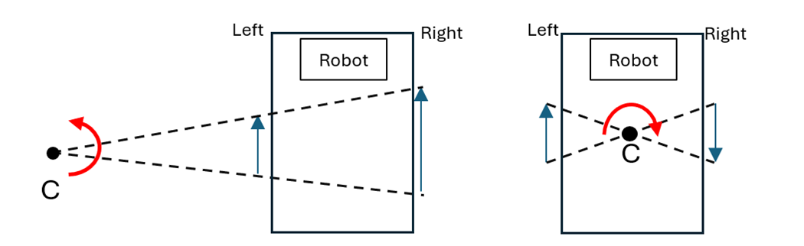

The goal of this research is to inspire the development of novel robust walking robotic systems
characterized by small number of degrees-of-freedom/actuators and a variety of gait patterns.
Specifically, the research proposes the creation of active phase changing drives that allow the variation
in specific link dimensions and presents a proof-of-concept of such a phase changing drive implemented
on a single leg. The phase changing drive is further extended and implemented on a multilegged
platform capable of executing a stable tripod gait. Experimental results show that the multilegged
platform is capable of walking forwards and backwards with various step lengths, depending on the
phase-offset configured by the phase changing drive. Further, the ability of the platform to execute
differential steering is demonstrated. It is shown that such articulated linkage systems have the potential
to extend the capabilities of one degree-of-freedom planar parallel mechanisms to produce a large
spectrum of walking foot trajectories and complex motion behaviors such as steering.
Testing and Results


Differential steering – (left) different stepping lengths, with turning center C outside robot, (right) opposite stepping direction, with turning center C inside robot.